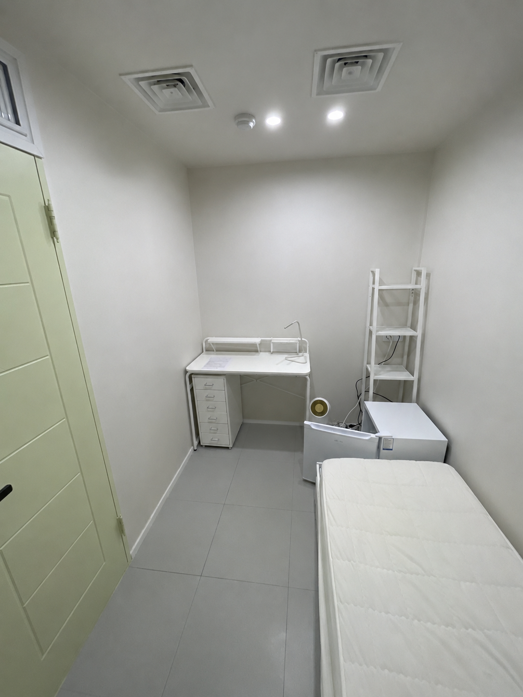

객실 자세히 보기
침대 시트는 제공되며 침구류는 미포함입니다. 공실 여부와 예약 가능 여부는 입실 시기에 따라 달라질 수 있습니다.

스탠다드룸
합리적인 비용으로 조용하게 생활할 수 있는 내창방입니다.

디럭스룸
방 크기는 스탠다드와 비슷하고 외창방입니다.

스위트룸1
넓고 쾌적한 공간을 원하는 분께 적합한 내창방입니다.

스위트룸2
스위트룸1보다 약간 작은 내창방입니다.
입주 및 예약 가능 여부는 시기에 따라 달라질 수 있으므로 룸투어 전 미리 문의해 주세요.